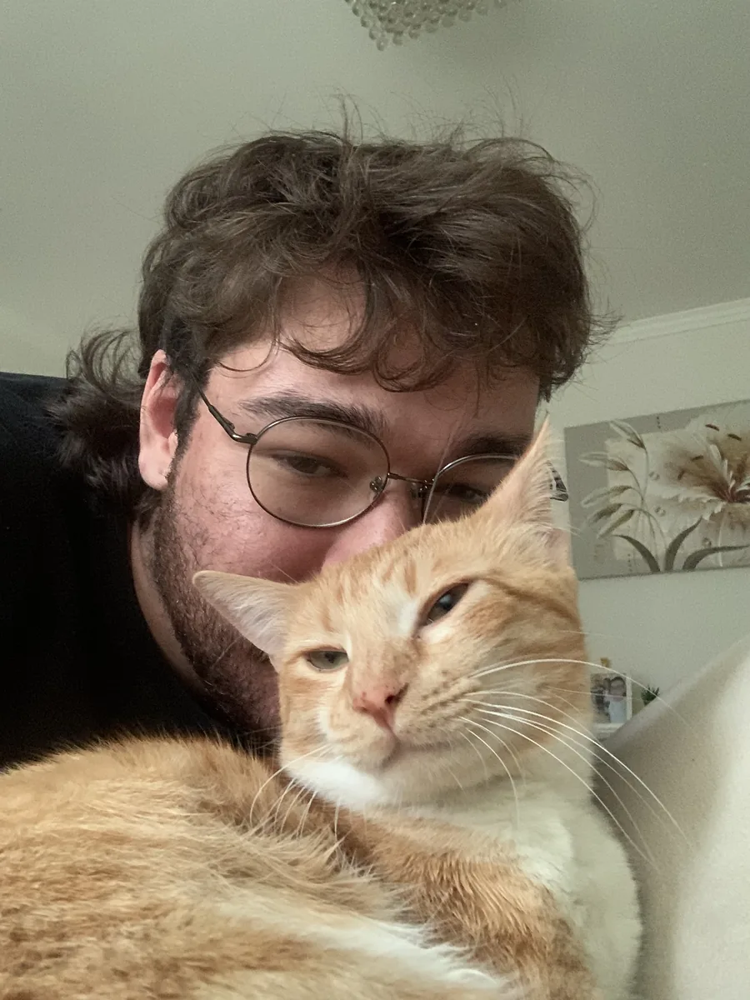
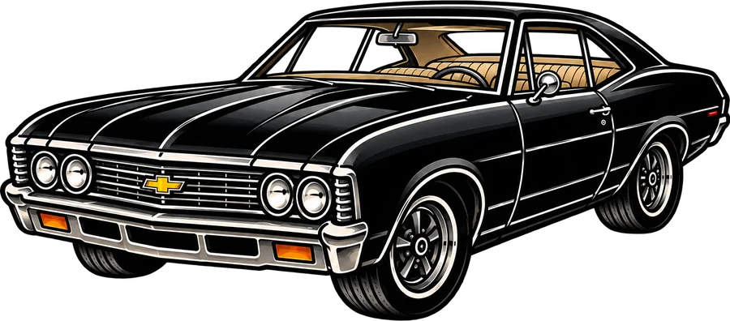

Gustavo Strada
Galeria de Projetos
Sou desenvolvedor e designer. Trabalho com programação full stack (front-end e back-end) e com design de UX/UI e identidade visual, da primeira ideia até o produto no ar.
A galeria tem duas áreas: Design (identidades visuais, posts e interfaces) e Programação (sites e apps). Escolha uma área, filtre por categoria e clique num projeto para ver os detalhes.
- Front-end
- Back-end
- UX/UI
- Identidade visual


Dev + DesignProjetos de programação em breve
Estou organizando os projetos de código para publicar aqui. Enquanto isso, dá uma olhada no meu GitHub.
Ver GitHub01